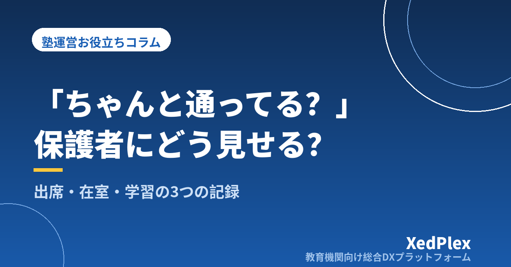

「ちゃんと通っているか」を保護者に見せる塾の仕組み｜出席・在室・学習の3つの記録で安心を届ける方法

「うちの子、ちゃんと塾に行っていますか？」「自習に行くと言って出かけたけれど、本当に勉強していますか？」。こうした問い合わせを受けて、出席簿をめくったり、講師に確認したりした経験はないでしょうか。保護者にしてみれば、月謝を払っていても、子どもが塾で過ごしている時間は目に見えません。見えないからこそ、小さな不安が積み重なります。
一方で塾側は、毎回きちんと授業をしていても、それを保護者に伝える手段がなければ「見えていない」のと同じです。この記事では、保護者が知りたい通塾の情報を出席・在室・学習の3つに分け、それぞれの記録の残し方と、無理なく保護者に見せる仕組みの作り方を、個人塾・小規模塾向けに整理します。
保護者が「通っているか」で知りたい3つのこと
「ちゃんと通っているか」という一言には、実は性質の違う3つの関心が含まれています。分けて考えると、それぞれに合った伝え方が見えてきます。
| 知りたいこと | 保護者の具体的な不安 | 必要な記録 | 伝えるタイミング |
|---|---|---|---|
| 出席（来たか） | 授業をさぼっていないか、欠席が増えていないか | 授業ごとの出欠 | 当日／月ごとのまとめ |
| 在室（いつ来て、いつ帰ったか） | 無事に着いたか、帰りが遅くないか、自習に本当に行ったか | 入室・退室の時刻 | その場（リアルタイム） |
| 学習（何をしたか） | 通っているのに成果が見えない、何をしているのか分からない | 授業内容・できたこと・課題 | 授業後／月1回程度 |
多くの塾では、このうち1つだけ、あるいは塾長の記憶の中にしか記録がありません。出席と在室は「安全と安心」、学習は「納得」につながる情報です。どれか1つが欠けると、保護者の不安はそこから生まれます。
記録が「見えていない」ときに起きること
記録がなかったり、塾の中だけに閉じていたりすると、次のようなことが起こりがちです。
- 問い合わせ対応に時間を取られる：「今日は来ましたか？」「何時に出ましたか？」に答えるたびに、出席簿や講師への確認が必要になります。
- 欠席や遅刻の変化に気づくのが遅れる：週1回の欠席が2回、3回と増えていても、月末にまとめて見るまで気づけません。退塾の前ぶれであることも少なくありません（退塾の予兆については退塾を防ぐ保護者コミュニケーションの仕組みで詳しく扱っています）。
- 「通っているのに伸びない」と言われたときに説明できない：通塾の回数や学習内容の記録がないと、成績の話が感覚的なやりとりになってしまいます。
- 家庭と塾で話が食い違う：子どもが「塾に行っていた」と言い、塾では来ていない、というケースも、記録があればすぐに事実を確認できます。
どれも、指導の質の問題ではなく、事実が記録され、共有される仕組みがないことから起きています。
3つの記録の残し方｜「手間をかけずに、毎回同じ形で」
1. 出席：授業単位で「出・欠・遅」を残す
出席は最もシンプルな記録ですが、続けるには形をそろえることが大切です。授業ごとに「出席・欠席（連絡あり／なし）・遅刻」の区別を残し、欠席連絡を受けた場合は受付日時もあわせて記録します。欠席連絡の受け方と振替のルールは欠席・振替管理のルール作りと運用を参考にしてください。
2. 在室：入室・退室の時刻を、生徒自身の操作で残す
在室の記録は、講師が手で書くと授業の合間に漏れやすくなります。入口で生徒自身がカードやQRコードをかざす、名簿にチェックするなど、「生徒が自分で記録する」形にすると続きやすく、時刻も正確になります。特に自習室を開放している塾では、授業のない日の在室が保護者にとっていちばん見えにくい部分です。方法ごとの比較は小さな塾でもできる入退室管理、自習室の運営ルールは個人塾の自習室運営で解説しています。
3. 学習：授業後3分で「やったこと・できたこと・次回」を残す
学習の記録は、長い文章である必要はありません。「今日やった範囲」「できるようになったこと／つまずいたこと」「次回やること」の3点を、授業直後に短く残すのが続けるコツです。記録の型は生徒記録（日誌）を残す習慣と活かし方で詳しく紹介しています。
保護者への見せ方｜通知・報告・面談の3段階で設計する
記録を残しただけでは、保護者の安心にはつながりません。どの情報を、どの頻度で、どの手段で届けるかを決めておきます。
| 段階 | 届ける情報 | 頻度の目安 | ポイント |
|---|---|---|---|
| 即時の通知 | 入室・退室（在室） | 毎回 | 手作業で送らず、記録と同時に自動で届く形にする |
| 定期の報告 | 出席のまとめ・学習の様子 | 毎回の短い報告、または月1回 | 出席回数と学習内容をセットで伝える |
| 面談 | 一定期間の出席・学習の記録と今後の方針 | 学期に1回程度 | 記録を見ながら「事実→解釈→次の一手」で話す |
即時の通知は「自動」が前提
入退室の連絡を講師が1件ずつLINEやメールで送るのは、生徒が増えるほど続きません。送り忘れが一度あると、「今日は連絡が来なかったけど大丈夫？」とかえって不安を生みます。記録した瞬間に保護者へ届く仕組みにしておくと、塾側の手間はゼロのまま、保護者は毎回の到着・帰宅を確認できます。連絡手段の整理は講師の個人LINE頼みは危険？もあわせてご覧ください。
定期の報告は「出席＋学習」をセットにする
「今月は8回中8回出席しました」だけでは、保護者は「で、何を勉強したの？」と思います。逆に学習内容だけだと、通塾状況が分かりません。月ごとのまとめでは、出席回数と、その期間にできるようになったことを並べて伝えると、通っていることと成果がつながって見えます。書き方は保護者に伝わる塾の指導報告書の書き方、頻度の考え方は塾の保護者連絡、適切な頻度は？を参考にしてください。
面談では記録を「材料」にする
面談で出席や学習の記録を一緒に見ながら話すと、「よく頑張っています」という印象の話ではなく、事実に基づいた会話になります。成績がすぐに伸びないときの説明でも、通塾と学習の記録が大きな支えになります（成績がすぐに伸びないとき、保護者にどう説明する？）。
記録が途切れたとき・気になる変化があったときの対応
記録を保護者に見せる仕組みは、「いつもと違う」に気づくための仕組みでもあります。あらかじめ対応のルールを決めておきましょう。
- 授業時刻を過ぎても入室記録がない：授業開始から一定時間（例：15分）たっても来ない場合は、塾から保護者に確認の連絡を入れる。連絡なしの欠席は、事故や行き違いの可能性も考えて早めに動きます。
- 退室の記録漏れ：生徒が退室操作を忘れると、保護者には「まだ塾にいる」ように見えます。閉室時に在室中の生徒が残っていないかを確認する手順を、閉室作業に組み込みます。
- 欠席・遅刻が続く：「2週続けて欠席」「遅刻が月3回」など、声をかける目安を決めておき、まずは生徒本人に、必要に応じて保護者に、責める調子ではなく様子をうかがう形で連絡します。
- 自習の在室時間が急に減る・増える：学校生活や家庭での変化のサインであることもあります。記録はあくまできっかけとして、本人の話を聞くことを優先します。
なお、入退室の時刻や学習の記録は、生徒の個人情報です。誰が見られるか、どこに保管するかも決めておきましょう。基本的な考え方は塾が守るべき生徒の個人情報管理の基本で整理しています。法令上の扱いで判断に迷う点は、専門家や個人情報保護委員会の相談窓口に確認してください。
まとめ
「ちゃんと通っているか」という保護者の不安は、出席（来たか）・在室（いつ来て帰ったか）・学習（何をしたか）の3つの記録を残し、それぞれに合った方法で届けることで大きく減らせます。在室は自動の通知で毎回、出席と学習は定期の報告でセットにして、面談では記録を材料に話す。この形ができると、問い合わせ対応の手間が減るだけでなく、欠席や遅刻の変化にも早く気づけるようになります。
まずは今週、自塾で「3つの記録がそれぞれどこに、どんな形で残っているか」を書き出してみてください。記録がない、または1か所にまとまっていない部分が、最初に整えるべきところです。
この記事を書いた運営より
私たちは、個人経営・小規模の学習塾向けに、生徒管理・QRコードでの入退室記録・月次請求・保護者へのLINE/メール通知・AIによる学習支援までをひとつにまとめた教育機関向け総合DXプラットフォーム「XedPlex（ゼドプレックス）」を開発・提供しています。初期費用は0円、料金は生徒1名あたり月額300円（税込）から。生徒50名の塾なら月15,000円（税込）です。全国8つの教室で導入されており、導入塾には紹介ホームページの無料作成も行っています。機能の詳細説明はこちら。
XedPlexの詳細を見る